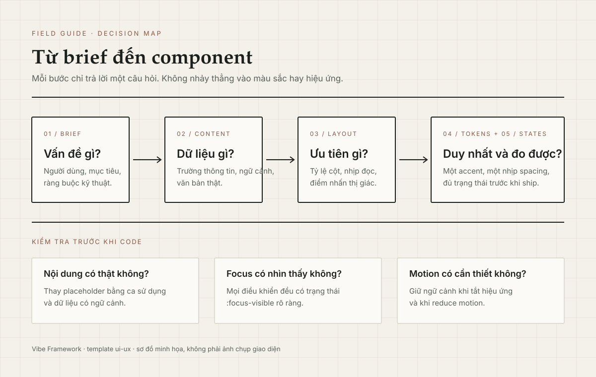

Master/detail
Duyệt danh sách dài rồi mở chi tiết mà không rời ngữ cảnh.
Mỗi quyết định đều có đầu ra.

Ba nguyên tắc giữ hệ thống khỏi trang trí vô cớ.
Danh sách trường dữ liệu, độ dài văn bản thật và ngữ cảnh hiển thị. Đây là đầu vào của mọi component.
Chọn trước tỷ lệ cột, khoảng cách nhóm và điểm nhấn. Mọi thay đổi sau đó đều có tiêu chí để từ chối.
--surface, --ink, --rule tốt hơn --blue-500 vì đổi theme không đổi ngữ nghĩa.
| Token | Vai trò | Giá trị |
|---|---|---|
--paper |
Nền trang | #f4f1ea |
--accent |
Nhấn một điểm duy nhất | #8a5641 |
--space-4 |
Nhịp cơ bản | 16px |
Sơ đồ phân vùng cho thấy ưu tiên thông tin, không phải ảnh chụp giao diện.
Duyệt danh sách dài rồi mở chi tiết mà không rời ngữ cảnh.
Một số liệu chính và vài tiện ích phụ cần nhìn cùng lúc.
Phù hợp: tổng quan vận hành.
So sánh nhiều hàng và thao tác nhanh bằng bàn phím.
Component chưa xong nếu mới chỉ có success.
Thông tin chính, nhãn phụ và hành động tiếp theo nằm trong một nhóm.
Skeleton giữ vị trí nội dung thật, layout không dịch khi dữ liệu về.
Nói rõ lý do và đưa một hành động để người dùng bắt đầu.
Nêu nguyên nhân bằng ngôn ngữ người dùng, cho thử lại tại chỗ.
Mỗi dòng là điều kiện kiểm được bằng tay hoặc script.
:focus-visible rõ, contrast đạt AA, văn bản đọc được khi JS tắt.
prefers-reduced-motion.